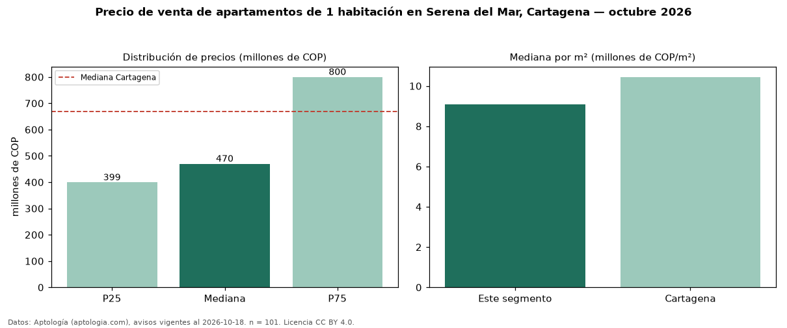

Precio de venta de apartamentos de 1 habitación en Serena del Mar, Cartagena — octubre 2026
En Serena del Mar, Cartagena, la mediana de precio de venta de apartamentos de 1 habitación es COP 470 millones, según 101 avisos vigentes. Eso es 30 % por debajo de la mediana de Cartagena para apartamentos de 1 habitación (COP 670 millones). Por metro cuadrado, la mediana es COP 9,07 millones/m² (n = 99 avisos con área), 13 % por debajo de Cartagena (COP 10,44 millones/m²). Son 19 % de los 533 avisos de apartamentos en venta de la zona, cuya mediana general es COP 630 millones (−25 %). Con el precio por m² de arriendo del mismo segmento (COP 45.055/m² al mes), la rentabilidad bruta implícita es 6,0 % anual (aproximación con medianas de ofertas distintas). El área mediana anunciada es 56 m². La administración mediana declarada es COP 400.000 al mes (n = 63). La mitad central de los avisos va de COP 399 millones a COP 800 millones (razón 2,0), una dispersión alta. Datos: Aptología (aptologia.com), CC BY 4.0 — https://www.aptologia.com/venta/cartagena/serena-del-mar. Archivos: PDF, CSV con las cifras y gráfica PNG.

| Avisos únicos | 101 |
|---|---|
| Percentil 25 | COP 399.000.000 |
| Mediana | COP 470.000.000 |
| Percentil 75 | COP 800.000.000 |
| Mediana por m² | COP 9.074.074 |
Fuente: avisos vigentes de portales inmobiliarios recopilados por Aptología, deduplicados (mínimo 30 avisos únicos por celda). Precios pedidos, no cerrados. Fecha: 2026-10-18.